,----,.
,-.----. ,' ,' |
\ / \ ,----.. .---. ,' .' | ,---, ,----,
| : \ / / \ /. ./| ,----.' .' ,`--.' | .' .' \
| | .\ :| : : .--'. ' ; | | .' / / : ,----,' |
. : |: |. | ;. / /__./ \ : | : : |--, : |.' ' | : . ;
| | \ :. ; /--`.--'. ' \' . : | ;.' \`----': | ; |.' /
| : . /; | ; /___/ \ | ' ' | | | ' ' ; `----'/ ;
; | |`-' | : | ; \ \; : `----'.'\ ; | | | / ; /
| | ; . | '___\ ; ` | __ \ . | ' : ; ; / /-,
: ' | ' ; : .'|. \ .\ ; / /\/ / : | | ' / / /.`|
: : : ' | '/ : \ \ ' \ | / ,,/ ',- . ' : |./__; :
| | : | : / : ' |--" \ ''\ ; ; |.'| : .'
`---'.| \ \ .' \ \ ; \ \ .' '---' ; | .'
`---` `---` '---" `--`-,-' `---'
_____ _ _ _ _ _ _ _____ _
/\ / ____| (_) (_) | | | | | | | __ \ | |
/ \ | | __| |_ _ __ ___ _ __ ___ ___ _ _ __ | |_ ___ | |_| |__ ___ | |__) |_ _ ___| |_
/ /\ \ | | |_ | | | '_ ` _ \| '_ \/ __|/ _ \ | | '_ \| __/ _ \ | __| '_ \ / _ \ | ___/ _` / __| __|
/ ____ \ | |__| | | | | | | | | |_) \__ \ __/ | | | | | || (_) | | |_| | | | __/ | | | (_| \__ \ |_
/_/ \_\ \_____|_|_|_| |_| |_| .__/|___/\___| |_|_| |_|\__\___/ \__|_| |_|\___| |_| \__,_|___/\__|
| |
|_|
Experience an epic journey in our latest video game, PCW 512. Dive into a world of adventure, mystery, and excitement.
In the mid-1980s, the world of personal computing was rapidly evolving. Amidst the giants like IBM and Apple, a British company named Amstrad dared to dream differently. Founded by the ambitious Alan Michael Sugar, Amstrad was already known for its CPC range. But in 1985, they introduced the PCW series, which would become a hallmark of affordable word processing.
The Amstrad PCW 512, released a year after its predecessor, the PCW 8256, was a marvel in its own right. Doubling the memory of its predecessor to 512KB, it was named aptly as the PCW 512. With its iconic green screen and a built-in printer, it was a complete package for the home and professional user. The PCW 512 wasn't just a computer; it was a dedicated word processor, making it a favorite among writers, journalists, and students.
Its software suite, LocoScript, became synonymous with word processing at the time. The PCW 512's success was not just due to its hardware but also the software that made word processing a breeze. Documents could be written, edited, and printed all from one machine, a novelty at the time.
The affordability of the PCW 512 was another factor in its widespread popularity. At a time when computers were considered luxury items, Amstrad's vision was to make them accessible to the masses. And with the PCW 512, they achieved just that. Families, schools, and small businesses could now afford a computer, bridging the digital divide.
However, like all technology, the PCW 512 had its era. As the 90s approached, more advanced and versatile computers entered the market. The world was moving towards multifunctional PCs, and dedicated word processors were becoming obsolete.
Yet, the legacy of the Amstrad PCW 512 remains. It stands as a testament to innovation, accessibility, and the spirit of an era when computing was just beginning to touch the lives of everyday people. For many, the PCW 512 was their introduction to the digital world, a machine that transformed words into stories, and ideas into reality.
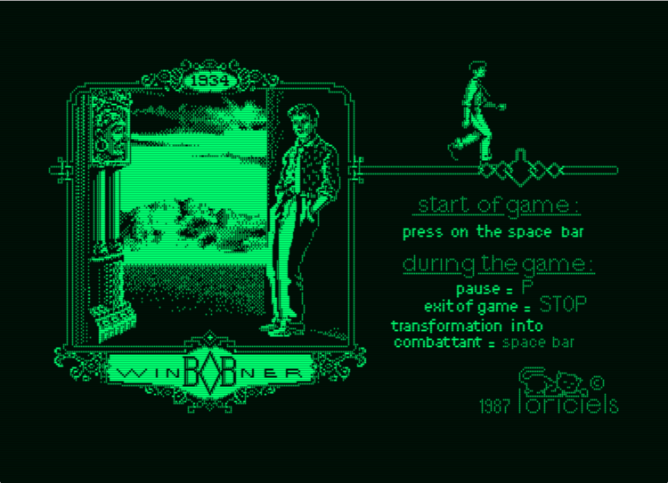
Bob Winner is a side-scrolling action-adventure game released in 1986 for the Amstrad PCW. It was developed by Loriciels, a French software company known for producing various titles during the 1980s and 1990s.
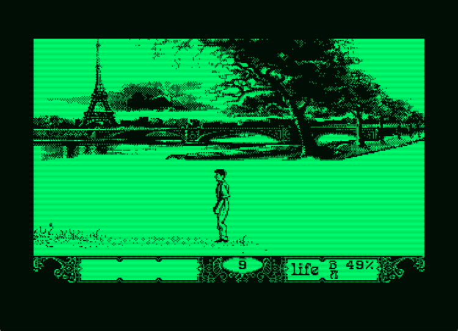
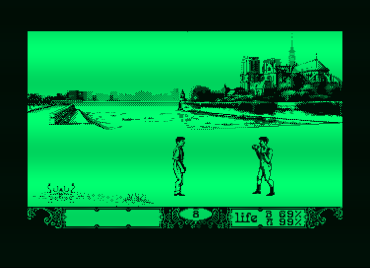
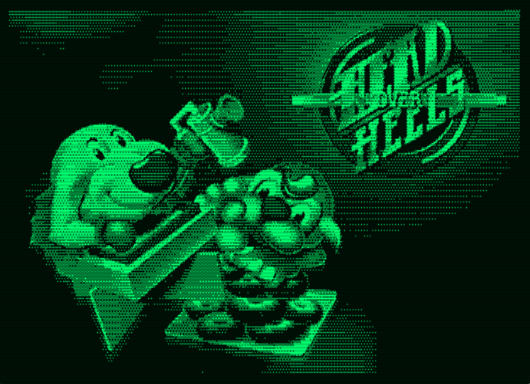
Head Over Heels is a critically acclaimed isometric action-adventure game developed by Jon Ritman and Bernie Drummond and released in 1987. The game was initially developed for the ZX Spectrum and Amstrad CPC but was later ported to various other platforms due to its immense popularity.
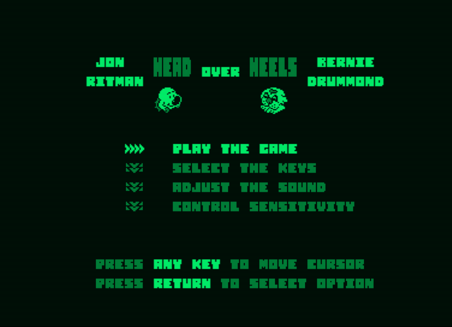
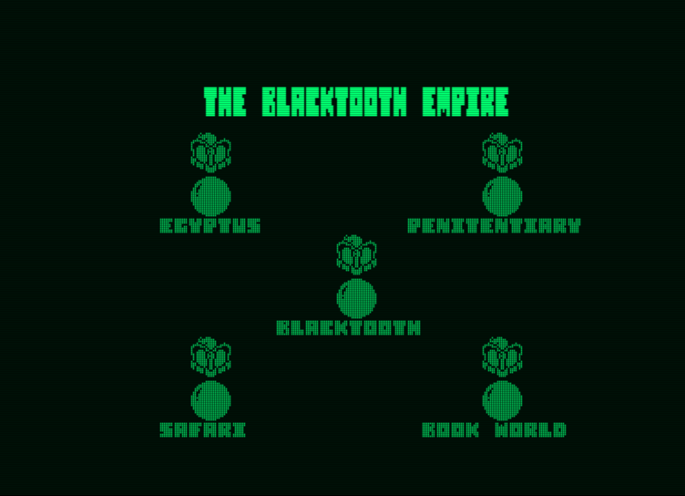
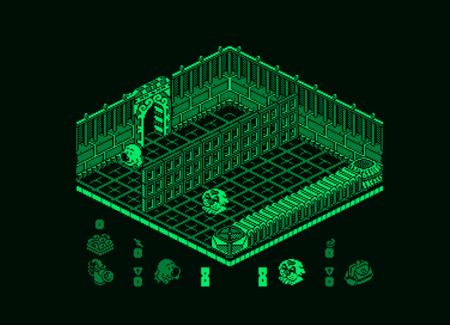
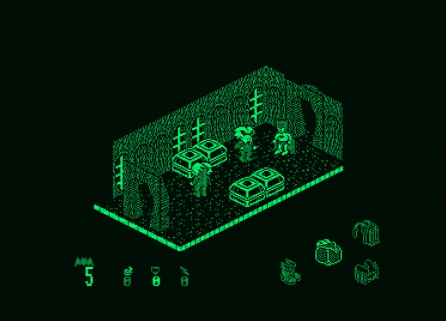 |
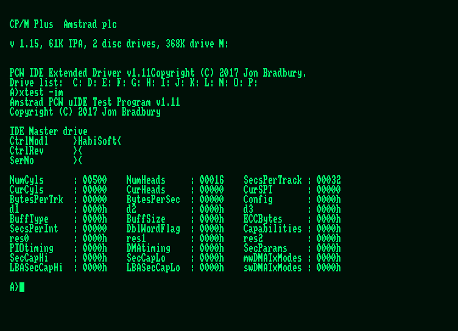 |
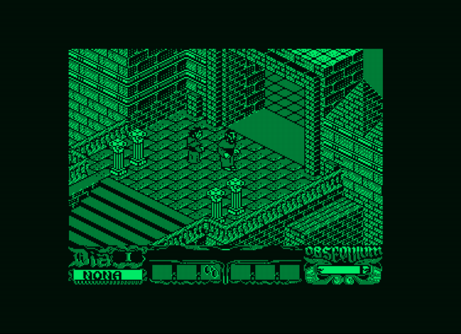 |
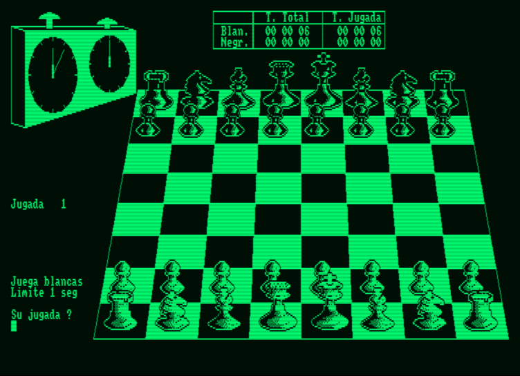 |
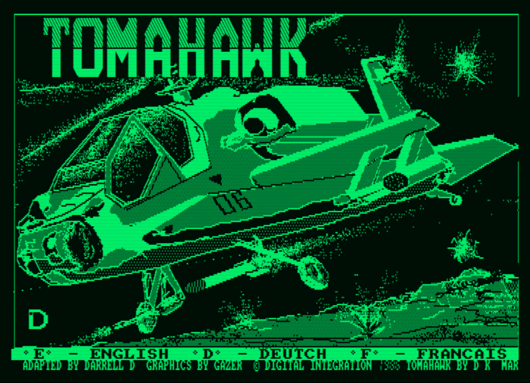 |
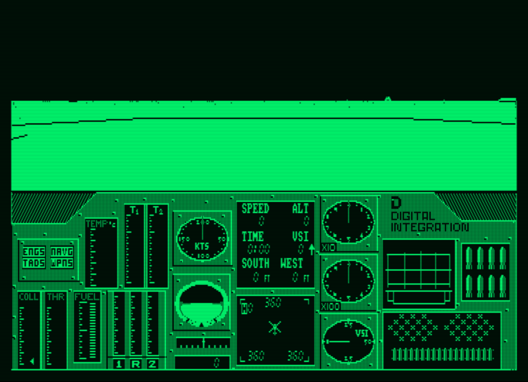 |
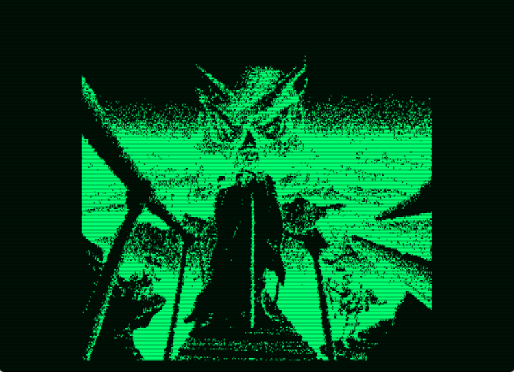 |
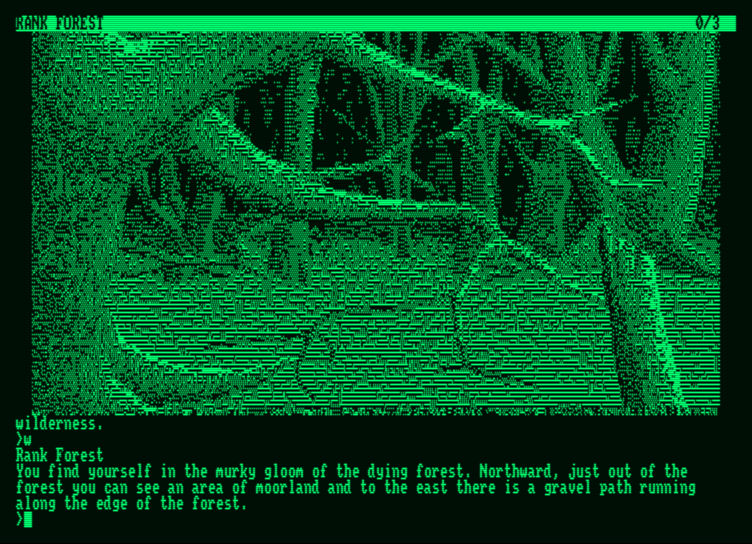 |
Ready to get a taste of the action? Download the demo now and embark on the first chapter of [Your Game Name].
| Download for PC | Download for Mac |
© PCW 512. All rights reserved.